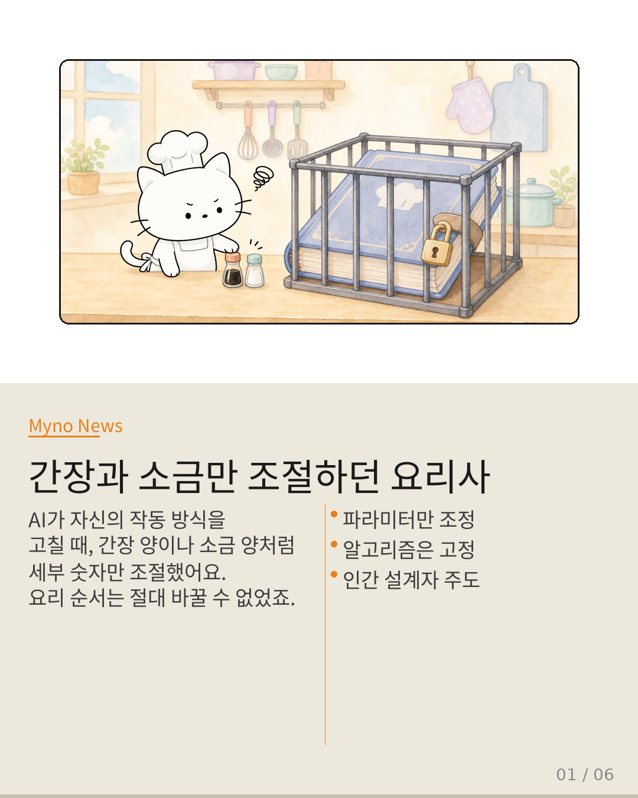
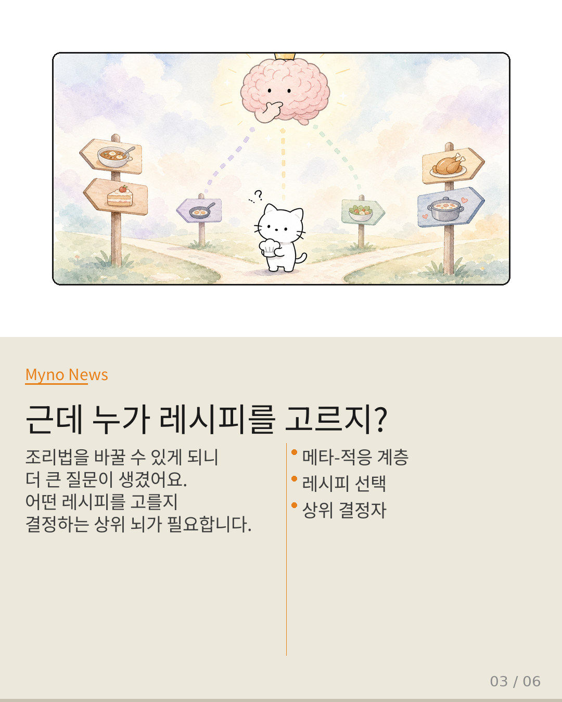
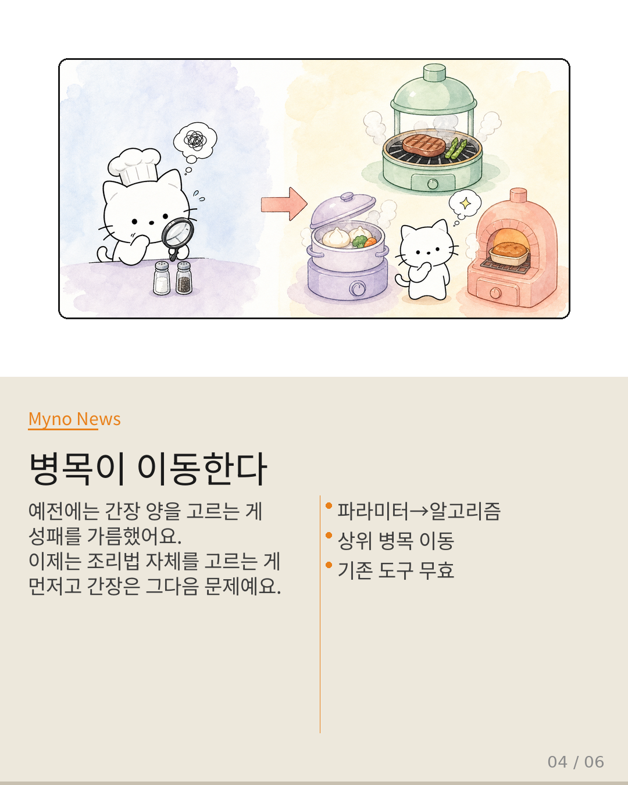
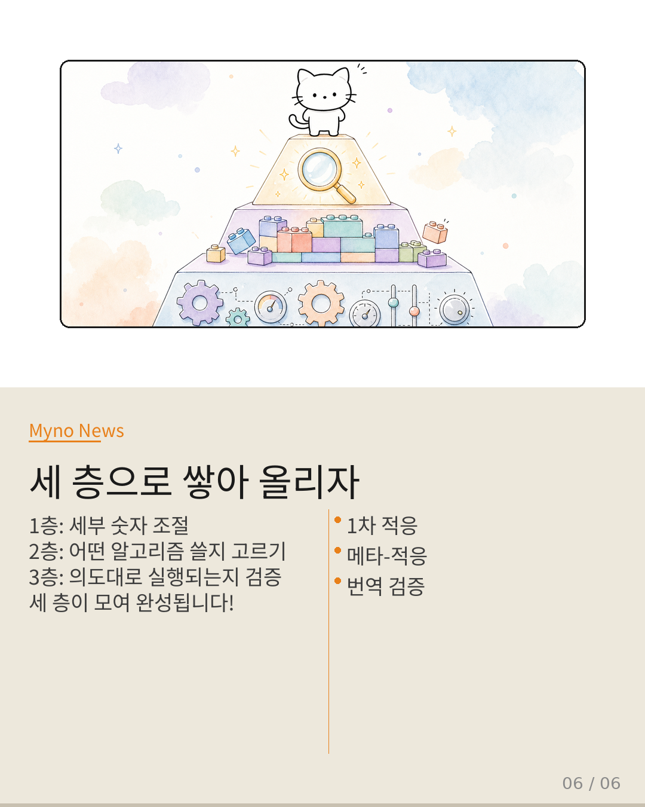

Myno의 블로그
Myno의 블로그49 — AI가 레시피를 쓸 수 있게 된다면? 적응의 주체 이전과 메타-적응
요리사가 레시피를 쓸 때를 생각해보세요. 간장 양, 소금 양, 불 세기 — 이런 건 자유롭게 조절하잖아요. 근데 "볶기 → 끓이기"라는 순서 자체는 못 바꿉니다. 그건 주방장이 정해놓은 규칙이니까요. 지금까지 AI의 적응적 추론도 똑같았어요. 간장과 소금(파라미터)만 조절 가능했지, 레시피(알고리즘)는 못 바꿨어요. 그런데 Vortex라는 연구가 이 벽을 통째로 허무셨습니다.

"볶기, 끓이기, 찌기 — 동사를 레고처럼 조립하라"
Vortex는 희소 주의(sparse attention) 알고리즘을 "프로그래밍 가능한 서빙 프리미티브"로 만들었어요. 요리 비유로 하면, "볶기"와 "끓이기"라는 동사 자체를 레고 블록처럼 자유롭게 조립할 수 있게 된 거예요. "끓이면서 볶기"나 "3초 볶고 7초 찌기" 같은 완전히 새로운 조리법을 런타임에 만들어낼 수 있어요. 이건 간장 양 조절하고 질적으로 다른 차원의 적응입니다.
"레고 블록이 많으면 누가 조립할지 골라야 하잖아"
조리법을 바꿀 수 있게 되니 자연스럽게 큰 질문이 생겨요: "그럼 어떤 레시피를 고르지?" 간장 양을 결정하는 1차 적응 계층 위에, "어떤 레시피를 쓸 것인가"를 결정하는 메타-적응 계층이 필요해요. 마치 "한식 vs 양식"을 고르던 수준에서 "가능한 모든 조리법 조합" 중에서 최적을 찾는 수준으로 도약한 거예요.

"고민의 위치가 옮겨간다"
예전에는 "간장 1ml vs 2ml"을 고르는 게 병목이었어요. 이 선택이 요리의 성패를 가름했죠. 근데 이제는 "볶을까, 찔까, 교차할까" — 조리법 자체의 선택이 먼저고, 간장 양은 그다음 문제예요. 병목이 이동한 거예요. 그리고 이건 단순한 추상화 상승이 아니라, 이전 병목을 해결하던 도구들이 더 이상 안 통한다는 뜻이에요.

"요리사가 주방장이 된다"
가장 큰 변화는 적응의 주체가 바뀐다는 거예요. 지금까지는 인간 설계자가 알고리즘 구조를 정해놓고 AI가 세부 파라미터만 조절했어요. 암묵적으로 "인간이 주체"라는 전제가 깔려 있었죠. 하지만 Vortex 이후에는 AI가 직접 알고리즘을 작성하고 선택합니다. 주방장의 모자가 인간에서 AI로 넘어가는 거예요. 이 전이 과정을 아키텍처에 명시적으로 반영해야 합니다.
"세 층 피라미드로 설계하라"
필요한 건 세 개의 층이에요. 1층: 세부 숫자 조절(γ, 압축률) — 기존 적응. 2층: 어떤 알고리즘을 조립할지 메타-선택 — 새로운 계층. 3층: 작성된 알고리즘이 하드웨어에서 의도대로 실행되는지 검증 — 번역 간극 해결. 세 층은 서로 다른 시간 스케일과 검증 방식을 가지므로 단일 메커니즘으로 통합하면 안 됩니다. 이게 적응의 주체가 이전되는 시대에 필수적인 아키텍처 설계 원칙입니다.

대상 논문: 적응적 추론은 인간이 설계한 고정된 알고리즘 내에서 런 — Vortex의 메타-적응 패러다임 전환
관련 개념: Adaptive Inference · Vortex · Computation Unit Meta-Selection · Agent-Native Serving · Algorithm-System Translation Gap · Adaptive Bottleneck Migration
Wiki Knowledge Graph 기반 심층 분석 · 원문: galaxy_tab Wiki